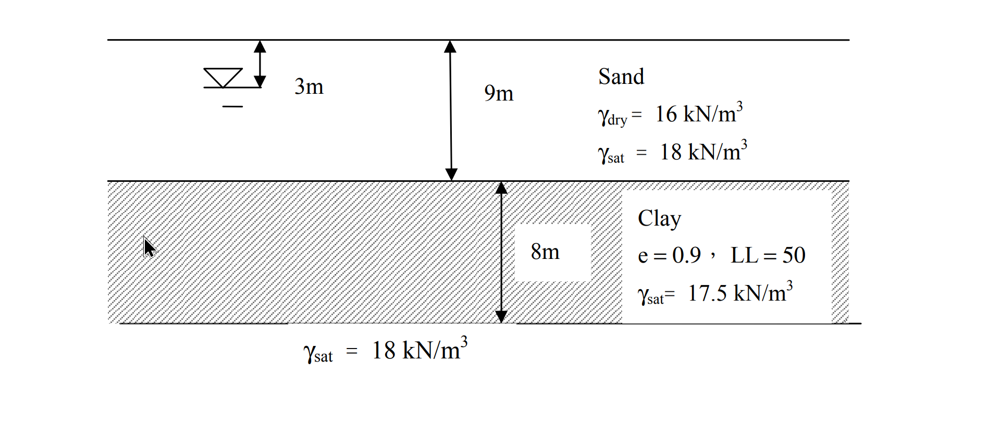

考題編號：SM-2015-4
主分類： SM-U1-3 土壤夯實及壓密
副分類： SM-U1-2 土壤滲透、SM-U1-4 土體內應力
分析法： 有效應力法
標籤： 抽水降階 Darcy定律 穩定滲流 孔隙水壓 有效應力原理 壓密沉陷 壓縮指數Cc
1. 原始題目重述 (Problem Restatement)
一地層如下圖所示，該處地層之孔隙水壓呈靜水壓分布，地下水位面位於地表下 3 m處。該正常壓密黏土，$\gamma_{sat} = 17.5 \text{ kN/m}^3$，$LL = 50$，$e =0.9$，$k = 10^{-7} \text{ m/sec}$。如因長期使用需求將黏土層上方砂土層之水頭抽降 5 m，則對該黏土層之滲流及壓密狀況將造成何種影響？分別計算黏土層單位面積最大滲流量及壓密沉陷量。（25 分）

圖說：地表下 0~9m 為砂土層（初始地下水位在 3m 處，$\gamma_{dry}=16\text{ kN/m}^3$，$\gamma_{sat}=18\text{ kN/m}^3$）；9~17m 為正常壓密黏土層（厚度 8m，$e=0.9$，$LL=50$，$\gamma_{sat}=17.5\text{ kN/m}^3$，$k=10^{-7}\text{ m/sec}$）；17m 以下為另一 $\gamma_{sat}=18\text{ kN/m}^3$ 之地層（推斷為未受抽水影響之透水層）。
2. 考題核心精神與出題者意圖 (Core Concepts & Examiner's Intent)
- 穩定滲流與有效應力變化：測驗考生是否能判斷「僅抽降上方砂土層」會導致黏土層上下邊界產生水頭差，進而引發由下向上的穩定滲流。
- 非靜水壓狀態之孔隙水壓計算：在穩定滲流下，黏土層內的孔隙水壓不再是靜水壓分布，而是隨總水頭線性變化，考生需能正確計算滲流狀態下黏土層內部的有效應力。
- 壓縮指數經驗公式：測驗考生是否熟悉未提供 $C_c$ 時，可利用液限 $LL$ 透過 Skempton 經驗公式求得。
3. 解題戰略地圖與陷阱分析 (Strategic Roadmap & Trap Analysis)
- 戰略一：滲流分析與水頭界定
以黏土層底部為基準面（Elev. 0m）。初始狀態地下水位在 Elev. 14m，黏土層上下水頭皆為 14m。抽水後上方砂土層水頭降 5m（變為 Elev. 9m），下方含水層未抽水（維持 14m），建立向上的水力坡降，以此計算滲流量。 - 戰略二：應力狀態分析
計算抽水前與抽水後達穩定滲流時，黏土層中央（代表點）的總應力與孔隙水壓，相減得到初始與最終有效應力。 - 陷阱：抽水使上方砂土層中 5m 厚之土壤由飽和（$\gamma_{sat}=18$）變為乾燥（$\gamma_{dry}=16$），故黏土層承受之「總垂直應力」會減少。若誤以為總應力不變，將導致有效應力計算錯誤。
- 戰略三：沉陷量計算
利用 Skempton 公式求出壓縮指數 $C_c$，再套用單層壓密沉陷公式求出沉陷量。 - 陷阱：有效應力在黏土層上方增加幅度大，底部甚至會因總應力減少而微幅解壓（回脹）。考場標準且最穩妥的作法是以黏土層「中央點」的應力變化為代表，將整層視為單一均質層計算。
3.5 變數層次分析 (Variable Hierarchy Analysis)
最終目標
計算黏土層因水頭抽降 5m 造成之單位面積最大滲流量（$q/A$）及壓密沉陷量（$S_c$）。
本題關鍵公式（依計算順序）
- 水力坡降：$i = \frac{\Delta h}{H_c}$
- 單位面積最大滲流量：$q/A = k \cdot \boxed{i}$
- 孔隙水壓分布（穩定滲流）：$u = \gamma_w \cdot h_p = \gamma_w \cdot (h - z)$
- Skempton 壓縮指數公式：$C_c = 0.009(LL - 10)$
- 壓密沉陷量（單層中央點法）：$S_c = \frac{\boxed{C_c} H_c}{1+e_0} \log \left( \frac{\sigma'_{vf,mid}}{\sigma'_{v0,mid}} \right)$
L1：題目直接給定
| 符號 | 數值 | 說明 |
|---|---|---|
| $H_c$ | $8 \text{ m}$ | 黏土層厚度 |
| $\Delta h$ | $5 \text{ m}$ | 黏土層上下邊界之水頭差（上方抽降 5m） |
| $k$ | $10^{-7} \text{ m/sec}$ | 黏土層滲透係數 |
| $LL$ | $50$ | 黏土層液限 |
| $e_0$ | $0.9$ | 黏土層初始孔隙比 |
L2：需知識點推導
滲流計算
| 符號 | 公式／來源 | 卡關? |
|---|---|---|
| $i$ | $i = \Delta h / H_c$ | |
| $v$ | $v = q/A = k \cdot i$ | |
應力計算 (以黏土層中央點，深度 13m 處為代表)
| 符號 | 公式／來源 | 卡關? |
|---|---|---|
| $\sigma_{v0}$ | $\Sigma (\gamma \cdot z)$ (初始水位 3m) | |
| $u_0$ | $\gamma_w \cdot z_{w,0}$ (初始水位 3m) | |
| $\sigma'_{v0,mid}$ | $\sigma_{v0} - u_0$ | |
| $\sigma_{vf}$ | $\Sigma (\gamma \cdot z)$ (最終水位 8m) | |
| $u_{f}$ | $(h_{mid} - z_{mid}) \cdot \gamma_w$ | |
| $\sigma'_{vf,mid}$ | $\sigma_{vf} - u_f$ | |
沉陷量計算
| 符號 | 公式／來源 | 卡關? |
|---|---|---|
| $C_c$ | $0.009(LL - 10)$ | |
| $S_c$ | $\frac{C_c H_c}{1+e_0} \log (\sigma'_{vf,mid} / \sigma'_{v0,mid})$ | |
L3：深層知識（不懂就卡住）
| 知識點 | 說明 | 卡關? |
|---|---|---|
| 穩定滲流孔隙水壓 | 抽水僅發生在上方砂層，下方地層水頭不變，水將由下往上滲流，孔隙水壓隨水頭線性變化，非靜水壓分布。 | |
| 總應力隨水位下降而減少 | 原本在地下水位下的砂土層（3m~8m區間）被抽乾後，單位重由 $\gamma_{sat}$ 變為 $\gamma_{dry}$，因此下方黏土層承受之總垂直應力 $\sigma_v$ 將會降低。 | |
| 壓縮指數經驗公式 | 當題目未給定 $C_c$ 卻給了 $LL$ 且為正常壓密黏土時，必須主動使用 Skempton 公式 $C_c = 0.009(LL-10)$ 求解。 |
4. 步驟化詳細計算過程 (Step-by-Step Detailed Calculation)
步驟一：評估對該黏土層之滲流及壓密狀況影響
- 滲流狀況：上方砂土層水頭抽降 5m，而下方地層未受抽水影響維持原水頭。因此，黏土層上下產生 5m 之水頭差，將誘發由下往上之穩定滲流 (Upward seepage)。
- 壓密狀況：上方水位下降導致水浮力消失，部分土層由飽和單位重變為乾單位重，使得總垂直應力下降；同時，由於水頭下降，孔隙水壓亦隨之下降。整體而言，黏土層中（特別是中上部）孔隙水壓之下降幅度大於總應力之下降幅度，導致有效應力增加，進而發生壓密沉陷。
步驟二：計算黏土層單位面積最大滲流量
設黏土層底部為基準面（Elevation $z = 0\text{ m}$，對應地表下 17m）：
- 黏土層底部（$z = 0\text{ m}$）：原水頭 $h_{bot} = 17 - 3 = 14\text{ m}$。因抽水僅在上方，底部水頭不變，故 $h_{bot} = 14\text{ m}$。
- 黏土層頂部（$z = 8\text{ m}$）：原水頭 $h_{top} = 14\text{ m}$。抽水降 5m 後，新水頭 $h_{top} = 14 - 5 = 9\text{ m}$。
- 水頭差 $\Delta h = h_{bot} - h_{top} = 14 - 9 = 5\text{ m}$。
- 水力坡降 $i = \frac{\Delta h}{H_c} = \frac{5}{8} = 0.625$（向上）。
依 Darcy 定律，單位面積最大滲流量（即滲流流速 $v$）：
$$ \frac{q}{A} = v = k \cdot i = 10^{-7} \text{ m/sec} \times 0.625 = \boxed{6.25 \times 10^{-8} \text{ m/sec}} $$
(註：若換算為每日滲流量，約為 $5.4 \times 10^{-3} \text{ m}^3/\text{day-m}^2$)
步驟三：計算壓密沉陷量（以黏土層中央點為代表）
取黏土層中央點（地表下 13m 處，或距底部 $z = 4\text{ m}$ 處）進行應力計算。
（註：計算中取水單位重 $\gamma_w = 9.81 \text{ kN/m}^3$）
1. 初始狀態（抽水前）：
地下水位在地表下 3m 處。
- 總應力 $\sigma_{v0}$：
$$ \sigma_{v0} = 3 \times 16 (\text{乾砂}) + 6 \times 18 (\text{飽和砂}) + 4 \times 17.5 (\text{黏土上半}) = 48 + 108 + 70 = 226 \text{ kPa} $$ - 孔隙水壓 $u_0$（靜水壓）：
$$ u_0 = (13 - 3) \times 9.81 = 10 \times 9.81 = 98.1 \text{ kPa} $$ - 初始有效應力 $\sigma'_{v0}$：
$$ \sigma'_{v0} = \sigma_{v0} - u_0 = 226 - 98.1 = \boxed{127.9 \text{ kPa}} $$
2. 最終狀態（抽水達穩定滲流後）：
上方砂層水頭降 5m，等同地下水位降至地表下 8m。
- 總應力 $\sigma_{vf}$（原 3m~8m 深度之砂土變為乾燥狀態）：
$$ \sigma_{vf} = 8 \times 16 (\text{乾砂}) + 1 \times 18 (\text{飽和砂}) + 4 \times 17.5 (\text{黏土上半}) = 128 + 18 + 70 = 216 \text{ kPa} $$ - 孔隙水壓 $u_f$（滲流呈線性分布）：
中央點總水頭 $h_{mid} = \frac{h_{top} + h_{bot}}{2} = \frac{9 + 14}{2} = 11.5 \text{ m}$
壓力水頭 $h_p = h_{mid} - z_{mid} = 11.5 - 4 = 7.5 \text{ m}$
$$ u_f = h_p \times \gamma_w = 7.5 \times 9.81 = 73.575 \text{ kPa} $$ - 最終有效應力 $\sigma'_{vf}$：
$$ \sigma'_{vf} = \sigma_{vf} - u_f = 216 - 73.575 = \boxed{142.425 \text{ kPa}} $$
3. 計算沉陷量 $S_c$：
利用 Skempton 公式求壓縮指數 $C_c$：
$$ C_c = 0.009(LL - 10) = 0.009(50 - 10) = \boxed{0.36} $$
代入正常壓密黏土單層沉陷公式：
$$ S_c = \frac{C_c H_c}{1 + e_0} \log \left( \frac{\sigma'_{vf}}{\sigma'_{v0}} \right) $$
$$ S_c = \frac{0.36 \times 8}{1 + 0.9} \log \left( \frac{142.425}{127.9} \right) = \frac{2.88}{1.9} \log (1.11356) $$
$$ S_c \approx 1.5158 \times 0.04671 \approx 0.0708 \text{ m} = \boxed{7.08 \text{ cm}} $$
5. 關鍵爭議點與進階探討 (Critical Issues & Advanced Discussion)
- 有效應力變化不均勻與分層計算差異
本題因總應力下降且有向上滲流，黏土層內有效應力變化呈現極大梯度：頂部有效應力增加量較大（約 $+39\text{ kPa}$），而底部由於總應力減少但孔隙水壓未變，有效應力甚至會微幅減少（約 $-10\text{ kPa}$，理論上會發生微量回脹）。若將 8m 黏土層切分為 4 層（每層 2m）分別計算再加總，求得之沉陷量約為 $8.09\text{ cm}$，會比單點中央代表法稍大且更精確。然而，依國家考試慣例，除非題目特別要求分層計算，否則以「中央點」作為單層均質代表的算法（即得出 $7.08\text{ cm}$）是公認且標準的得分作法。 - $\gamma_w$ 之選用標準
本題未明示水單位重，依常規選用 $\gamma_w = 9.81\text{ kN/m}^3$ 進行精密計算。若考場上為了速算而採用 $\gamma_w = 10\text{ kN/m}^3$，求出之沉陷量約為 $7.40\text{ cm}$，只要列式清晰、觀念正確，通常評卷委員仍會給予滿分或極高之部分給分。